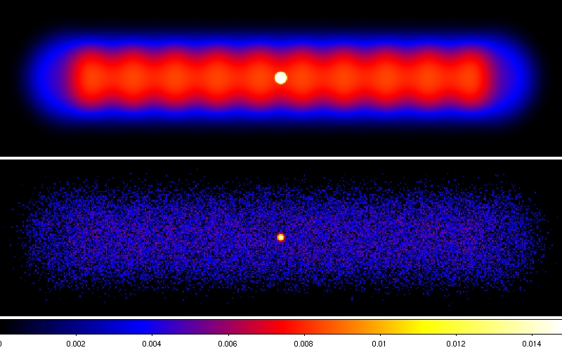

ctools
ctools are a set of ftools-like executables needed for the scientific analysis of Cherenkov Telescope Array data. ctools is also a Python module that allows for interactive data analysis and building of analysis scripts and pipelines. ctools includes also an observation simulator to enable the scientific simulation of future CTA observations.
ctools are based on GammaLib, a versatile toolbox for the high-level analysis of astronomical gamma-ray data. Besides CTA, GammaLib supports also the analysis of Fermi-LAT data, and extensions to support further gamma-ray instruments are planned. This enables a simultaneous and coherent multi-instrument analysis of high-energy sources in the Universe.
ctools and GammaLib is free software distributed under the GPL license version 3.
|  Simulation of galactic plane scan, composed of 10 half-hour observations, spaced by 2° in Galactic longitude. A single point source with Crab spectrum was simulated at the Galactic centre. The top panel shows the model, the bottom panel the simulated data. |
Last updated by: Jürgen
Knödlseder (6 October 2011)